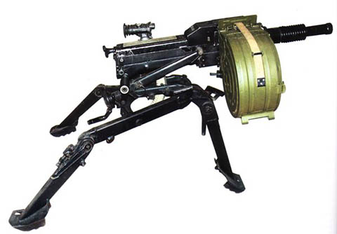
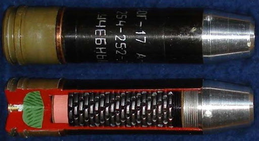
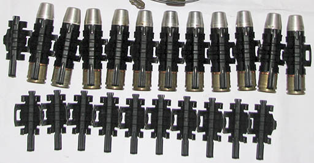

ВОГНЕВА ПІДГОТОВКА - АГС-17 "Пламя"
Призначення, загальні відомості. ТТХ. Боєприпаси.
Призначення, загальні відомості.
30 мм автоматичний гранатомет на станку призначений для ураження живої сили та вогневих засобів противника, які розташуються зовні сховищ, у відкритих окопах та поза вкладками місцевості (в оврагах, зворотних скатах висот).
Стрільба з гранатомета здійснюється настільною та навісною траєкторіями, короткими (до 5 пострілів), довгими ( до 10 пострілів) чергами та безперервно.
Регулятор, який є на гранатометі, дозволяє вести вогонь з двома різними темпами (на старих зразках): мінімальним – 50-100 пострілів за хвилину і максимальним – 350-400 пострілів за хв. На нових зразках - автоматичним вогнем (50-100 пострілів за хв.) та одиночними пострілами.
Видача пострілів під час стрільби здійснюється з коробки ємкістю 29 пострілів, які заряджені у ланковий ланцюг.
Охолодження стволу повітряне, воно дозволяє ведення безперервного вогню до 300 пострілів.
ТТХ.
| Властивість | Значення |
|---|---|
| Калібр | 30 мм |
| Прицільна дальність стрільби | 1700 м |
| Гранична відстань стрільби | 1700 м |
| Радіус суцільного ураження | не більше 7м |
| Початкова швидкість гранати | 135 м/с |
| Взведення вибухача | через 10-30 м після виходу з каналу ствола |
| Темп стрільби -максимальний | 350-400 п/хв |
| Темп стрільби - мінімальний | 50-100 п/хв |
| Боєкомплект | 87 пострілів (3 коробки) |
| Місткість короба | 29 постр |
| Маса коробки з боєприпасами | 14,5 кг |
| Вага гранатомета зі станком та прицілом | 31 кг |
| Маса тіла | 18 кг |
| Маса станка | 12 кг |
| Маса прицілу | 1 кг |
| Безперервний вогонь | до 300 постр. |
| Вага пострілу | 0.35 кг |
| Довжина | 840 мм |
| Довжина ствола | 305 мм |
Боєприпаси.
Для стрільби з гранатомета застосовується 30-мм постріл ВОГ-17 з уламковою гранатою ОГ-17,
Уламкова граната призначається для ураження живої сили уламками. Вона складається з корпуса, ведучого пояска, пружини (уламкової сорочки) і розривного заряду.
Пороховий заряд призначається для надання гранаті початкової швидкості. Він складається з гільзи, капсуля-запальника та пороху на основі нітрогліцерину.
Головний висаджувач ВМГ-М (мал. 34) служить для забезпечення розриву гранати при зустрічі її з перешкодою. Висаджувач ВМГ-М - головний, ударно-миттєвої та інерційної дії, напівзапобіжного типу, з піротехнічним далеким взведенням і самоліквідацією. Висаджувач безпечний у службовому поводженні, при транспортуванні, стрілянині та на польоті до взведення, при падінні з висоти до 3 м на будь-яку поверхню у будь-якім положенні. Висаджувач ВМГ-М складається з ударного механізму, запального механізму, запобіжно-відцентрового механізму, механізму дальнього взведення та механізму самоліквідації.
Механізми висаджувача розміщені в корпусі на прокладці та підгорнуті через ковпачок гайкою з прокладкою. У хвостовій частині корпуса розташований калсуль-детонатор, закріплений гайкою.
Ударний механізм призначений для передачі зусилля реакції перешкоди та забезпечення спрацьовування вогневого ланцюга висаджувача. Він складається з кришки з гвинтом, підтягнуті пружиною до ковпачка, двох пластин, що упираються в жало, підтягнуте пружиною з ковпачком. Механізм зібраний у вкладиші, закритий ковпачком і вкладений у гайку.
Запалювальний механізм, забезпечує запуск механізму дальнього взведення. Механізм складається з капсуля-запальника, пружини, жала, закріпленого у втулці.
Запобіжний механізм дальнього взведення забезпечує безпеку висаджувача в при повсякденному користуванні. Він складається з втулки з запресованим пороховим складом, стопору, який утримує заслінку з пружиною від просування в бойове положення. У заслінці розміщений високочутливий капсуль-детонатор.
Запобіжно-відцентровий механізм утримує заслінку від переміщення в бойове положення до пострілу. Механізм складається зі штифта, пружини та ковпачка, розміщених у втулці.
Механізм самоліквідації, призначений для ліквідації гранати у випадку ЇЇ відмови при зустрічі з перешкодою. Механізм складається з запресованого у втулці по кільцевій доріжці пороховим складом сповільнювача і капсуля-детонатора, закріпленого у втулці.